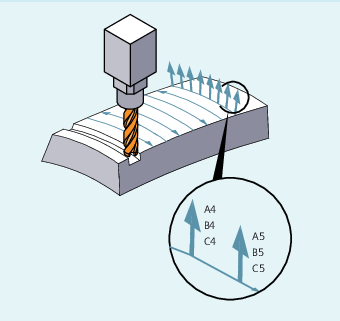

Face milling is used to machine curved surfaces of any kind.
For this type of 3D milling, you will require the line-by-line description of the 3D paths on the workpiece surface.
The tool shape and dimensions are taken into account in the calculations, which are normally performed in CAM. The fully calculated NC blocks are then read into the control via postprocessors.
The path curvature is described by surface normal vectors with the following components:
A4, B4, C4 Start vector at block start
A5, B5, C5 End vector at block end
If a block only contains the start vector, the surface normal vector will remain constant throughout the block. If a block only contains the end vector, interpolation will run from the end value of the previous block via large-circle interpolation to the programmed end value.
If the start and end vectors are programmed, interpolation runs between the two directions, also via large-circle interpolation. This allows continuously smooth paths to be created.
Regardless of the active G17 to G19 level, in the initial setting, surface normal vectors point in the Z direction.
The length of a vector is meaningless.
Vector components that have not been programmed are set to zero.
When ORIWKS is active (see "Reference of the orientation axes (ORIWKS, ORIMKS):"), the surface normal vectors refer to the active frame and are also rotated with frame rotation.
The surface normal vector must be perpendicular to the path tangent, within a limit value set via machine data, otherwise an alarm will be output.